Free to forkNo licence and no copyright claim: build this game under your own name, or lift one idea from it. Why?
Game overview
Core Kicker is pinball without the death pit. A sabotage drone has cut its way into an enemy warship and plugged itself into the reactor, and it kicks a ball of plasma around the reactor chamber, smashing components until the core melts down and takes the ship with it.
The ball always comes back to you. There are no side drains and no balls to lose: you time each kick to keep the combo going, nudge the ball in flight, and slow time down to whack it onto a better line, the way Nanaca Crash does. Good play makes the ball faster, harder and tougher. Bad play only means the ball shatters sooner, and the drone loads another.
It mixes the satisfying part of pinball (watching the ball fly, bounce and smash things) with Breakout's bricks and Nanaca Crash's slow-motion course corrections, set in a far-future war.
Target audience
People who love watching a pinball fly, bounce and light up a table, but hate the moment it rolls down the drain between the flippers. Fans of Breakout, Peggle and physics toys, and anyone who wants ten minutes of flow rather than a test.
The controls are about as simple as games get: one kick button, a left-right tilt, and slow motion with a pointer for the occasional whack.
Game's purpose
Enjoyment and movement: the pleasure of watching a ball do most of the work, flying, ricocheting and smashing.
Mastery: timing kicks, reading angles and keeping a combo alive.
Power: one tiny drone bringing down a warship from the inside, with a finale as big as the run that caused it.
It avoids draining rest and safety: there's no drain to fear, no lives to count and no game over. A bad run is only a smaller explosion.
Core concept
Pinball is built around losing: a pit at the bottom, a limited number of balls, and a game that ends when you run out. Most of a pinball session is anxiety about the drain.
Core Kicker removes the pit. The bottom of every chamber funnels back to your kicker, balls are unlimited, and every board ends in a meltdown. What's left is the part people actually love: the ball in flight, the chain of hits, the flash of the bumpers.
Skill still matters. It decides how fast the ball gets, how long it survives, and how big the ship goes up.
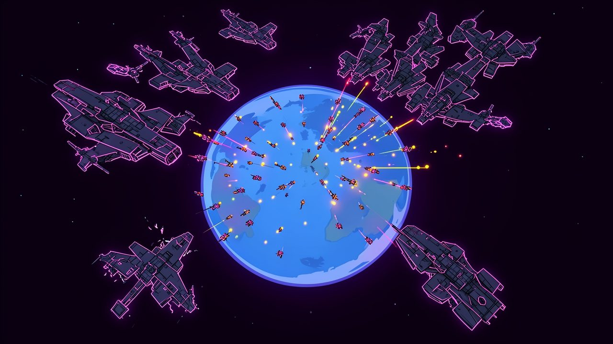
"The colonies can't match the armada ship for ship. So they send drones that break in and turn each ship's reactor against it."
Lore and story
The Hoard
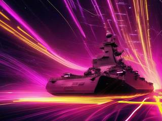
Far in the future, an armada called the Hoard moves from star system to star system, strip-mining every world it finds and leaving rubble behind. It's huge, heavily armored, and built on greed: every warship is also a factory, and every factory wants more.
Its latest target is a small system of colony worlds with no navy worth the name. In a straight fight, the colonies would last an afternoon.
The kickers
So they don't fight straight. Their answer is a sabotage drone, small, cheap and built by the hundred. It rides a stealth dart onto a warship's hull, cuts its way to the reactor, and plugs into the reactor's own control interface.
From there it takes over the containment machinery that's meant to keep the core stable, and uses it the other way: it forms balls of plasma in magnetic fields and kicks them around the reactor chamber, smashing coolant pumps, containment rings and control rods until the core gives out. The drone is unmanned and goes up with the ship. The colonies' crews call the drones kickers.
The cores
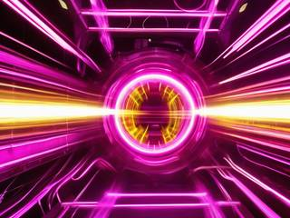
The Hoard builds its ships around several kinds of reactor drive, and each kind has a chamber of its own, with its own layout, its own components and its own strange behavior once a kicker starts tearing it apart. Learning the cores is learning the game.
The job right now
A battle group has entered the system. Choose a ship, send the drone in, and kick until the lights go out.
Controls and interface
You control one thing: the drone's kicker at the bottom of the chamber. It launches the first ball and kicks every ball that comes back down. The ball does the rest of the work.
The kicker
Space
Kick. A well-timed kick is stronger and keeps the combo going.
A / D
Tilt the kicker to aim the kick left or right
W
Nudge the ball in flight (a small, slow magnetic tug)
Slow motion and slots
Shift
Slow motion while the meter lasts
Mouse
Aim a whack, or a launcher slot's shot
Left click
Whack the ball toward the pointer, or fire the slot
Esc
Pause
The HUD shows the ball's field strength (its health), its speed and the current combo, the slow-motion meter, and the core's state: which components are still standing and how close it is to meltdown.
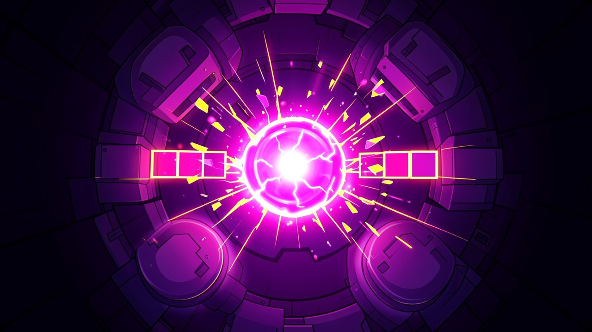
"Every valid hit makes the ball faster, harder and tougher. Missing lets its magnetic field fade."
Game layers
01 · Moment-to-moment
One ball, one rally
The kicker launches a ball up into the chamber. It flies, ricochets off bumpers, cracks bricks, slams into reactor components and eventually falls back toward you, and you kick it again. A good rally strings hit after hit together, and the ball gets faster and more destructive with each one.
Every ball eventually shatters, when its magnetic field fades. The drone forms a new one, and the combo starts again from zero, but every component the last ball broke stays broken.
02 · Low metagame
A ship
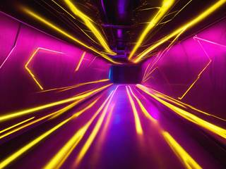
Each warship is one board: its reactor chamber. You bring the core down either by smashing its critical components or by pounding the core itself until it overloads, whichever the board makes easier. Bonus objectives along the way open gates, remove armor plates and hand out boosts.
Then the meltdown. The camera pulls out to watch the warship blow apart, and the size of the explosion follows the score of the run. You can't fail a ship; you can only bring it down more or less spectacularly.
03 · High metagame
The defense of the colonies
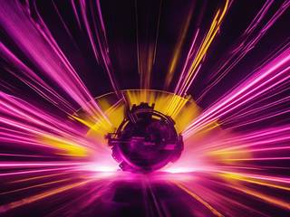
The war map shows the home system and the Hoard battle group currently inside it: a handful of ships with different cores. You pick which ship to send a kicker into next, in any order, with the group's flagship and its huge reactor usually saved for last.
Every ship you bring down stays in the system as a drifting wreck, and the wreck fields grow battle group after battle group, a sky full of the war you've been fighting. The Hoard is endless, so a new battle group arrives whenever you're ready for one. The wrecks are a record, not a score.
04 · Practical game flow
A ship over coffee
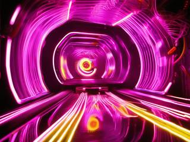
A ship takes roughly five to ten minutes, a whole battle group an evening. Start the game, pick a ship on the war map, and you're kicking within seconds.
Pausing is always allowed, and stopping between ships costs nothing: the battle group waits with the same ships still in the sky.
Game modes
There's one mode, the war, in nested pieces you can stop between:
The warEndless: battle group after battle group, as long as you want to play.
A battle groupA handful of ships with different cores, ending with its flagship: an evening.
A shipOne reactor chamber, ending in a meltdown: five to ten minutes.
Features and mechanics
The heart of it
No death pit
A Core Kicker board works like a pinball table, with gravity pulling everything down, but two things are gone. There's no plunger lane dropping the ball in from the top, and there's no drain: no gap between flippers and no side lanes leading to one. The bottom of every chamber is a slanted floor that funnels the ball back to the kicker.
Instead of two flippers there's one device, the drone's launcher and rebounder, which starts each ball and kicks it back up every time it comes down. Time the kick as the ball arrives and it goes up harder and keeps the combo; mistime it and it still goes up, just weaker. Tilt the kicker to choose a side.
Balls are unlimited. The only way a ball ends is by shattering when its field fails, and then the drone simply makes another.
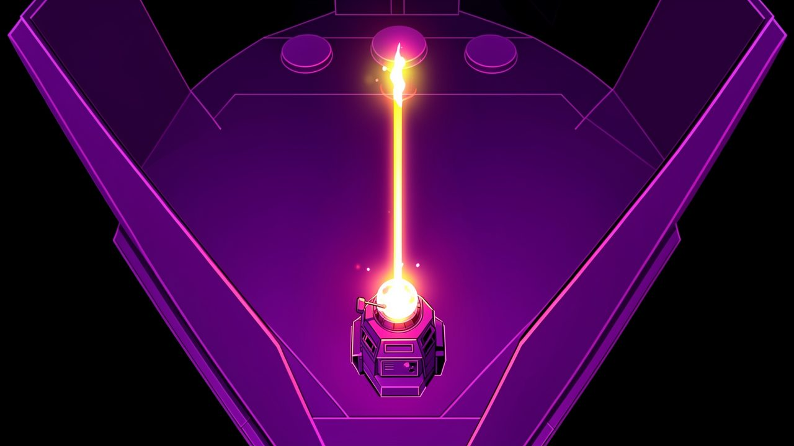
"There's no drain. The floor of every chamber slopes back to the kicker, and the drone always has another ball."
The ball is the score
Combos build the ball
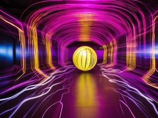
Each ball is plasma held in a magnetic field, and the field is its health. Hits on valid targets (components, bumpers, bricks, the core) feed the combo, and the combo feeds the ball: it gets faster, hits harder and becomes tougher, so it takes less damage from its own impacts.
Missing does the opposite. Long flights that hit nothing and bounces off bare armor let the field fade, and a ball that's fading breaks sooner. A great rally is a ball that keeps getting stronger; a poor one shatters early and leaves less damage behind.
As in Nanaca Crash
Slow motion and course-correcting whacks
Pinball usually leaves you helpless once the ball leaves the flipper. Here you get a little say. A gentle nudge pulls the ball slightly while it flies, and slow motion drops the game to a crawl while its meter lasts.
In slow motion you can whack the ball toward the pointer: a forward boost to keep momentum, or a push in any direction to put it back on a line toward the target you need. The meter refills as the combo grows, so a good rally keeps paying for its own rescues.
Boards from templates
One chamber per core, never the same twice
Each kind of reactor drive has its own hand-made chamber template: the shape of the board, where the core sits, which components guard it. On top of the template, every ship rolls its own extras: added bumpers, semi-randomly placed bricks, and events caused by the core itself as it starts to fail.
Core
How its chamber plays
Fusion
The classic table: steady gravity, a ring of containment magnets around a central core, flares that briefly light up whole rows of bricks.
Plasma
Hot and fast: vents that blast the ball sideways, and walls that soften and give way as the core overheats.
Ion
Magnetic storms sweep the chamber and bend the ball's path, so slow-motion whacks matter more.
Singularity
No gravity at all: the ball drifts, loses speed on every wall and shatters if it gets too slow, and speeds up on every valid hit.
Pinball meets Breakout
Bricks, gates and launcher slots
Between the bumpers are bricks, as in Breakout. Some break after a number of hits, some only to a hit that's hard enough, and some need both, so a fast, strong ball opens paths a weak one can't.
Gates and armor plates block the best routes to the core until a bonus objective opens or removes them. Launcher slots catch the ball when it rolls in and fire it back out at great speed, in a direction you aim, which is the board's way of handing you a precise shot at something that matters.
Feedback, not a leaderboard
The meltdown
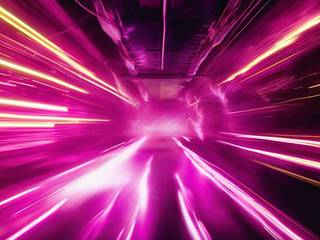
Every board ends the same way: the core goes critical and the ship tears itself apart. What changes is how hard. The run's score, built from the damage done and the combos chained, sets the size of the final explosion, from a ship breaking in half to a blast that lights up the whole system.
The score isn't ranked against anyone. Its only job is to show you how well that run went, in the most satisfying way the game has.
Trivia
The idea came from a clip of pinball on Reddit and a simple question: what if pinball had no death pit? The design notes then describe the goal as scoring enough hits "upon the reactorcore" to cause a total meltdown, which is a fitting thing for a game by Reactorcore to be about.
The notes float a second mix from the same core: pinball, minigolf and arena battle, in the spirit of Beyblade and Reactorcore's own ragdoll and physics designs. They suggest building one game with the core mechanics first, then spinning each mix off as its own game.
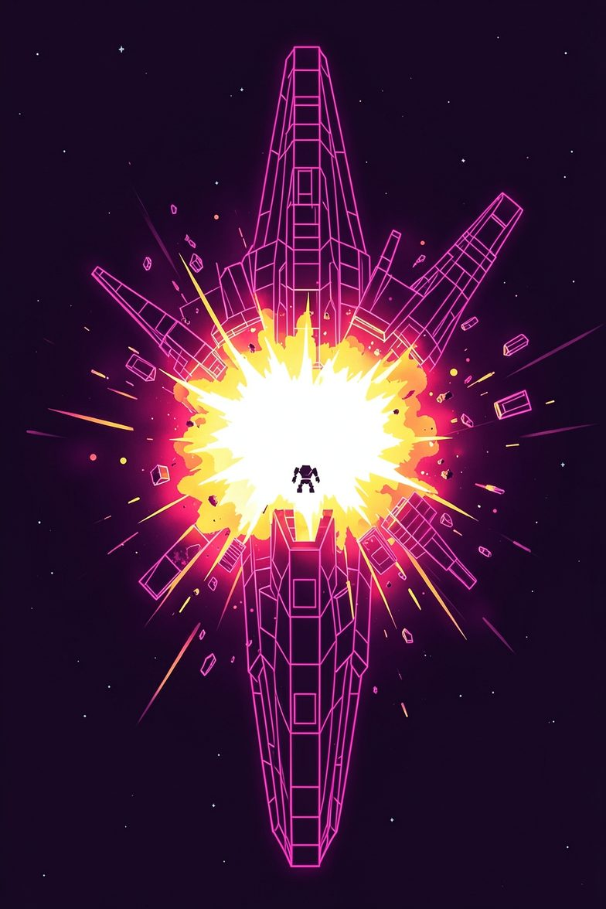
Drone deployed · Interface linked
Core Kicker: Reactor Meltdown Pinball
Connection established. Containment controls: yours. Reactor: hostile, armored, very large. Supply of plasma: unlimited.
Kick the ball. Keep the combo alive. Crack the bricks, break the rings, find the angle to the core, and make sure that when this ship goes, the whole system sees it.